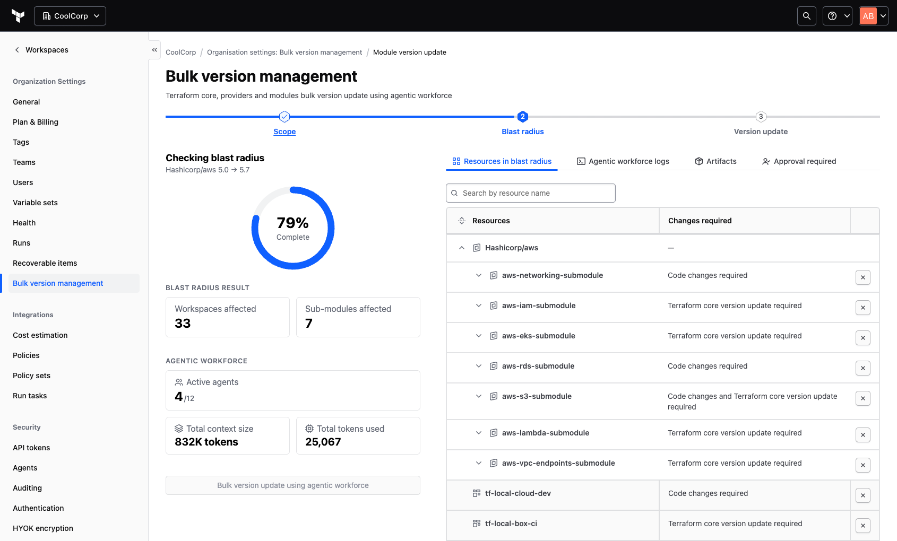
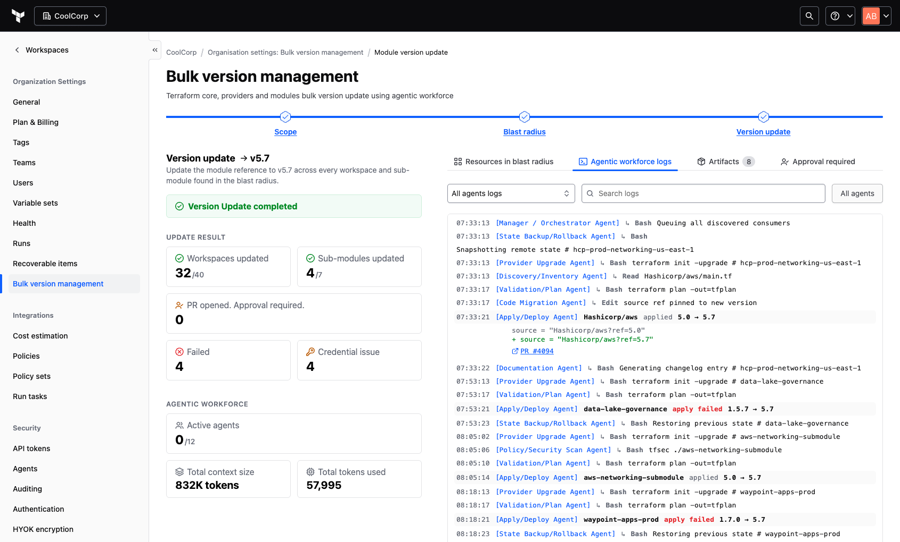
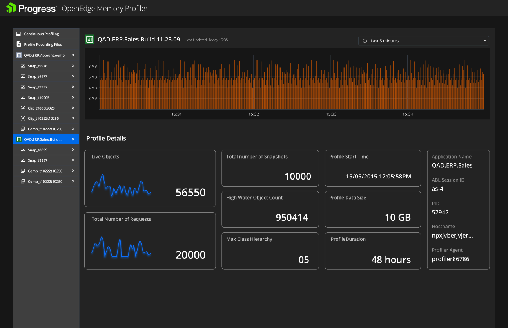
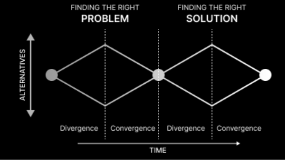
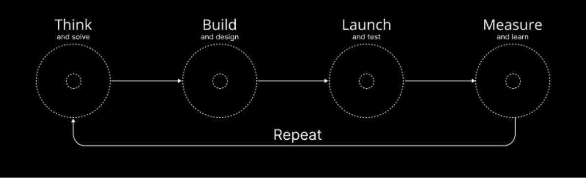

I design the tools developers actually want to open.
UX strategist, human-AI orchestrator and global design manager. Twelve years turning Terraform upgrades, memory leaks and observability pipelines into workflows people trust. I started as a software engineer, so I read the stack trace before the Figma file.
I manage teams. I also still ship.
Progress ADP teams moved from "Interested" (UX acknowledged, little support) to "Committed" (UX critical, executives actively involved).
Read the full leadership case studyMaking Terraform upgrades boring again.
Upgrading Terraform means touching core, modules and providers at once, in production, with state on the line. Engineers postponed it for as long as they could, and old versions piled up across workspaces.
Foundational research with technical stakeholders at Tier-1 financial institutions, including JPMC and DBS Bank. Their Infrastructure-as-Code friction became a low-risk upgrade roadmap for large enterprise estates.
An agentic flow that does the tedious work and hands back control at every risky moment. The agent proposes, explains and waits. The engineer approves.


The shipped flow: blast-radius check, then the agentic workforce running the update with a live log.
Prototyped with Claude Code and the Helios Design System MCP server, so reviews happened on working software built from real components rather than on static frames.
80% of HCP Terraform workspaces moved to the latest version. That grew Resources Under Management, which is how the business earns revenue from Terraform.
Finding the leak before the ticket.


The shipped profiler: live memory graphs and profile details, then AI-generated comparisons between snapshots.
Memory leaks in OpenEdge applications were hard to trace. Developers took them to support calls and forums, and every one of those took time on both sides.
An AI-enabled profiler that explains what it sees in plain language and points to where to look, so developers can solve the problem themselves.
Inbound support calls and forum inquiries dropped by 50%. Self-service troubleshooting improved and Mean Time to Resolution went down.
Designing for doing
The intersection of Activity-Centered Design and Lean execution
Design is not merely about making things look good; it is about making things work. My philosophy is grounded in the rigors of Design Thinking, but it is built for the speed of modern software development — marrying the strategic depth of the Double Diamond with the iterative speed of Lean Agile.
To ensure I am never solving the wrong problem, I visualize the macro-strategy using the Double Diamond. This framework prevents the "solutioneering" trap — jumping to a fix before understanding the friction.

While the Double Diamond provides the map, Agile is the engine. I do not believe in "Big Bang" launches — I believe in shaping a product by iterating on both features and problems, day by day.

Methodologies like Agile and Design Thinking are the how; Activity-Centered Design (ACD) is the what. Early in my career I adhered strictly to Human-Centered Design. As I specialized in Developer Experience, I realized HCD has limits in complex technical domains — in technical tools, the Activity defines the User.
"Activity-centered design focuses on the activities to be performed... The activity definition provides a coherence that is often missing when the focus is strictly on the needs of the individual users."
HCD asks, "Is this easy?" ACD asks, "Does this empower the user to complete the task?" Developers will tolerate a learning curve if the tool provides the precision the activity requires.
HCD often looks at linear journeys. ACD looks at the ecosystem — a developer isn't just "using a CLI," they're debugging a microservice while checking logs and committing to Git. ACD designs for that chaotic, non-linear reality.
My design process is a hybrid of strategic depth and tactical speed. The Double Diamond ensures I solve the right problem. Activity-Centered Design ensures the solution fits the complex reality of the workflow. Lean Agile cycles ensure we deliver value and validate assumptions every single day.
Commit history
Fluent in both dialects.
B.Tech in IT, four years as an engineer at Wipro, then an MDes at IIT Kanpur. I talk to engineers in their terms, and I prototype in real code when a static frame can't answer the question.
{
"design": ["Figma", "Adobe XD", "Miro"],
"ai": ["Claude Code", "Gemini Code Assist", "IBM Bob", "Google Stitch"],
"code": ["HTML", "CSS", "JavaScript", "React", "React Native", "Node.js", "Java"],
"ides": ["VS Code", "Cursor", "Antigravity", "n8n", "Android Studio"],
"infra": ["Terraform", "Vault", "Docker", "Kubernetes", "AWS", "GCP", "Azure", "Chef"],
"observability": ["OpenTelemetry", "Instana", "Datadog", "New Relic", "Grafana"],
"analytics": ["Pendo", "Google Analytics"],
"a11y": "WCAG 2.2 AA",
"awards": ["Patent: medical device design", "Samsung App Contest winner, 2012", "Hercules Award, Wipro"]
}
terraform apply -auto-approve
Hiring for DevEx, infrastructure or AI tooling? I'd like to hear what you're building.